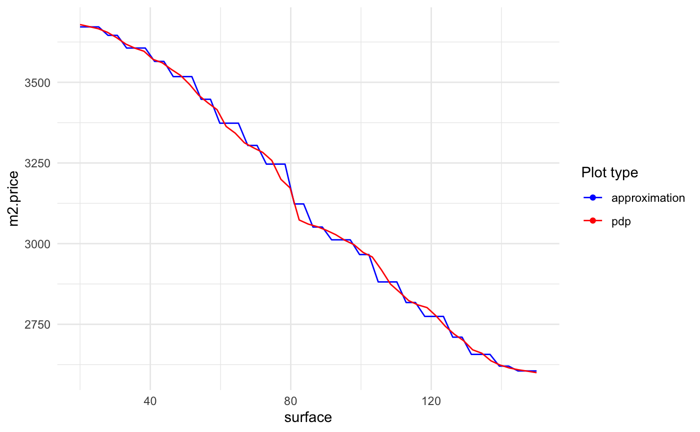

cases.Rmd## 'data.frame': 14999 obs. of 10 variables:
## $ satisfaction_level : num 0.38 0.8 0.11 0.72 0.37 0.41 0.1 0.92 0.89 0.42 ...
## $ last_evaluation : num 0.53 0.86 0.88 0.87 0.52 0.5 0.77 0.85 1 0.53 ...
## $ number_project : int 2 5 7 5 2 2 6 5 5 2 ...
## $ average_montly_hours : int 157 262 272 223 159 153 247 259 224 142 ...
## $ time_spend_company : int 3 6 4 5 3 3 4 5 5 3 ...
## $ Work_accident : int 0 0 0 0 0 0 0 0 0 0 ...
## $ left : int 1 1 1 1 1 1 1 1 1 1 ...
## $ promotion_last_5years: int 0 0 0 0 0 0 0 0 0 0 ...
## $ sales : Factor w/ 10 levels "accounting","hr",..: 8 8 8 8 8 8 8 8 8 8 ...
## $ salary : Factor w/ 3 levels "high","low","medium": 2 3 3 2 2 2 2 2 2 2 ...model_matrix_train <- model.matrix(left ~ . -1, HR)
data_train <- xgb.DMatrix(model_matrix_train, label = HR$left)
param <- list(max_depth = 2, objective = "binary:logistic")
HR_xgb_model <- xgb.train(param, data_train, nrounds = 50)
model_xs <- xspline(HR_xgb_model, lhs = "left", response = "left", predictors = colnames(HR)[-7],
data = HR, form = "additive", family = "binomial", link = "logit",
bare = c("number_project", "time_spend_company", "Work_accident", "promotion_last_5years"),
xs_opts = list(effect = list(train = model_matrix_train)),
xf_opts = list(transition = list(alter = "never")))
summary(model_xs)##
## Call:
## stats::glm(formula = left ~ xs(satisfaction_level) + xs(last_evaluation) +
## number_project + xs(average_montly_hours) + time_spend_company +
## Work_accident + promotion_last_5years + sales + salary, family = family,
## data = data)
##
## Deviance Residuals:
## Min 1Q Median 3Q Max
## -3.6566 -0.4484 -0.2223 -0.0284 3.2011
##
## Coefficients:
## Estimate Std. Error z value Pr(>|z|)
## (Intercept) 9.07884 0.34622 26.223 < 2e-16 ***
## xs(satisfaction_level) -2.94843 0.07125 -41.383 < 2e-16 ***
## xs(last_evaluation) -4.44209 0.16588 -26.779 < 2e-16 ***
## number_project -0.39311 0.02533 -15.521 < 2e-16 ***
## xs(average_montly_hours) -2.16248 0.12928 -16.727 < 2e-16 ***
## time_spend_company 0.38107 0.01851 20.583 < 2e-16 ***
## Work_accident -1.45516 0.10977 -13.257 < 2e-16 ***
## promotion_last_5years -1.05742 0.28709 -3.683 0.00023 ***
## saleshr 0.15624 0.16616 0.940 0.34708
## salesIT -0.27458 0.15585 -1.762 0.07809 .
## salesmanagement -0.55376 0.20384 -2.717 0.00659 **
## salesmarketing -0.12759 0.16521 -0.772 0.43994
## salesproduct_mng -0.24057 0.16331 -1.473 0.14073
## salesRandD -0.56603 0.18318 -3.090 0.00200 **
## salessales -0.07321 0.12897 -0.568 0.57025
## salessupport 0.03285 0.13832 0.238 0.81226
## salestechnical 0.12093 0.13444 0.899 0.36839
## salarylow 1.91403 0.15438 12.398 < 2e-16 ***
## salarymedium 1.34516 0.15522 8.666 < 2e-16 ***
## ---
## Signif. codes: 0 '***' 0.001 '**' 0.01 '*' 0.05 '.' 0.1 ' ' 1
##
## (Dispersion parameter for binomial family taken to be 1)
##
## Null deviance: 16464.7 on 14998 degrees of freedom
## Residual deviance: 8410.7 on 14980 degrees of freedom
## AIC: 8448.7
##
## Number of Fisher Scoring iterations: 6library(DALEX)
library(caret)
library(xspliner)
data(apartments)
set.seed(123)
variable <- "construction.year"
regr_rf <- train(m2.price ~ ., data = apartments, method = "rf", ntree = 100)
model_xs <- xspline(regr_rf, data = apartments, bare = c("floor", "no.rooms"),
xs_opts = list(transition = list(bs = "ps", fx = FALSE, k = 20, m = -1)))## Warning: Column `orig` joining factors with different levels, coercing to
## character vectorplot_variable_transition(model_xs, "surface")